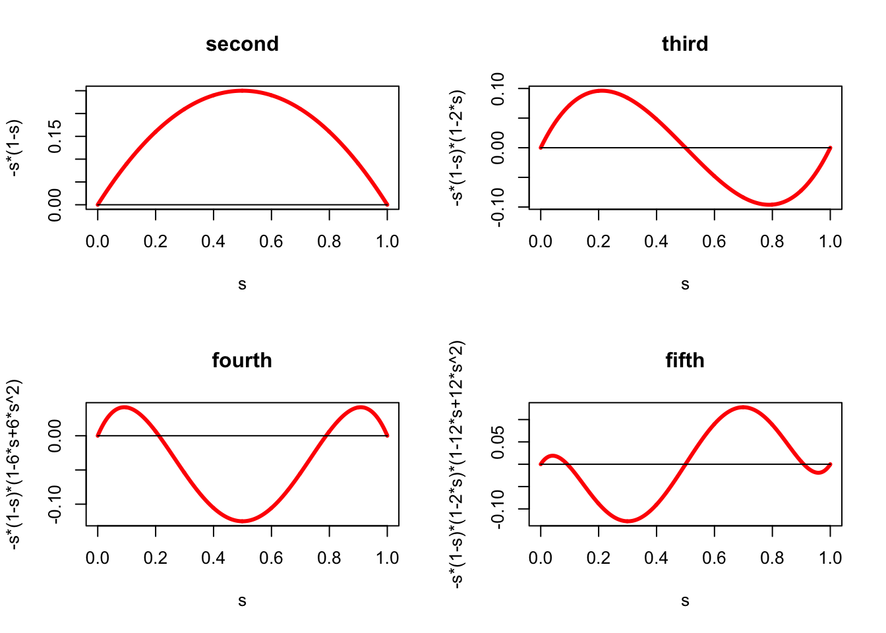

5 Using Higher Derivatives
##Introduction
##Mean Value Majorization
Suppose \(f\) is differentiable in an open set \(\mathcal{X}\) containing both \(x\) and \(y\) and the line connecting them. We can use the mean value theorem in the inequality form \[ f(x)\leq f(y)+\sup_{0\leq\lambda\leq 1} (x-y)'\mathcal{D}f(y+\lambda(x-y)) \] Define, for fixed \(x,y\) \[ h(\lambda)\mathop{=}\limits^{\Delta}(x-y)'\mathcal{D}f(y+\lambda(x-y)) \] The maximum of \(h\) is attained at either \(\lambda=0\), or \(\lambda=1\), or at a point in the interior of the unit interval where the derivative with respect to \(\lambda\) vanishes. Now \[ \mathcal{D}h(\lambda)=(x-y)'\mathcal{D}^2f(y+\lambda(x-y))(x-y). \] Thus for concave \(f\) we see that \(h\) is decreasing, and we recover our previous result \[ f(x)\leq f(y)+(x-y)'\mathcal{D}f(y). \] For convex \(f\), for which \(h\) is increasing, we find \[ f(x)\leq f(y)+(x-y)'\mathcal{D}f(x). \]For the univariate cubic \(f(x)=a+bx+\frac12 cx^2+\frac16 dx^3\) we have \[ \mathcal{D}f(x)=b+cx+\frac12 dx^2, \] and thus we must compute \(\sup_{0\leq\lambda\leq 1}h(\lambda)\) where \[ h(\lambda)\mathop{=}\limits^{\Delta}z(b+c(y+\lambda z)+\frac12d(y+\lambda z)^2), \] where \(z\mathop{=}\limits^{\Delta}x-y\). If \(dz^3 > 0\) the quadratic \(h\) is convex, and the maximum is attained at one of the endpoints, i.e. \[ \sup_{0\leq\lambda\leq 1}h(\lambda)= \max\{z(b+cy+\frac12 dy^2),z(b+cx+\frac12 dx^2)\} \] \[ cz+\frac12 dz(x+y)>0 \]
5.1 Taylor Majorization
5.1.1 Second Order
We can take this one step further. Obviously \[ f(x)\leq f(y)+(x-y)'\nabla f(y)+ \frac{1}{2}\sup_{0\leq\lambda\leq 1} (x-y)'\nabla^2f(y+\lambda(x-y)) (x-y). \] The main problem with these approaches based on the mean value theorem is that the majorizing function may not be simple. Nevertheless the approach can also be used to arrive at bounds which are computationally convenient.
For a univariate cubic \(f(x)=a+bx+\frac12 cx^2+\frac16 dx^3\) we find the majorization
\[\begin{multline*} f(x)\leq f(y)+f'(y)(x-y)+\frac12(x-y)^2\max_{0\leq\lambda\leq 1}\left(c+ d(x+\lambda(y-x))\right)=\\=f(y)+f'(y)(x-y)+\frac12(x-y)^2 \begin{cases} c+d\max(x,y)&\text{ if }d\geq 0,\\ c+d\min(x,y)&\text{ if }d\leq 0,\\ \end{cases} \end{multline*}\]
For the exponent
\[\begin{multline*} \exp(x)\leq \exp(y)+\exp(y)(x-y)+\frac12 (x-y)^2\sup_{0\leq\lambda\leq 1}\exp(y+\lambda(x-y))=\\ =\exp(y)+\exp(y)(x-y)+\frac12 (x-y)^2\exp(\max(x,y)) \end{multline*}\]
For the folium with \(f(x)=x_1^3+x_2^3-3x_1^{\ }x_2^{\ }\) we have \[ \mathcal{D}^2f(x)=\begin{bmatrix}6x_1&-3\\-3&6x_2\end{bmatrix}. \] Thus a simple majorizer is given by (incorrect 03/03/15) \[ g(x,y)=f(y)+(x-y)'\mathcal{D}f(y)+\max(x_1,x_2)(x-y)'V(x-y), \] with \[ V=\begin{bmatrix}6&-3\\-3&6\end{bmatrix}. \]
NB: see probit section for \(f''(x)\) decreasing. 03/03/15
5.1.2 Higher Order
From Taylor’s theorem with Lagrange form of the remainder discussed in [A:Taylor] it follows that \[ f(x)\leq g_p(x,y)+\frac{1}{(p+1)!}\sup_{0\leq\lambda\leq 1}<\mathcal{D}^{p+1}f(x+\lambda(y-x)),(x-y)^{p+1}>, \] where \(g_p\) is the \(p-\)degree Taylor polynomial at \(y\).
If all elements of the array in \(\frac{1}{(p+1)!}\mathcal{D}^{p+1}f(x+\lambda(y-x))\) are less than \(\kappa\) in absolute value for all \(x,y\) and \(\lambda\), then this implies \[ f(x)\leq g_p(x,y)+\kappa\left\{\sum_{i=1}^n|x_i-y_i|\right\}^{p+1} \]
We can also use the Frobenius norm and Cauchy-Schwartz to obtain \[ f(x)\leq g_p(x,y)+\kappa(x,y)\|x-y\|^{p+1}, \] where \[ \kappa(x,y)\mathop{=}\limits^{\Delta}\frac{1}{(p+1)!}\sup_{0\leq\lambda\leq 1}\|\mathcal{D}^{p+1}f(x+\lambda(y-x))\|. \] Of course it remains to be seen if these formulas actually lead to useful majorization algorithms. For higher \(p\) they will undoubtedly have fast convergence, but the optimizations in each iteration involve higher order multivariate polynomials and look pretty daunting.
5.2 Nesterov Majorization
Suppose \(f\) is a function with third derivatives that are bounded in the sense that \[ \langle\mathcal{D}^3f(x),(x-y)^3\rangle\leq K_3\|x-y\|^3.\tag{1} \] It is sufficient for this that the Hessian is Lipschitz continuous with Lipschitz constant \(K_3\). Majorization based on \((1)\) was first discussed in an important article by Nesterov and Polyak (2006)
Under these conditions we have the majorizer \[ g(x,y)=f(y)+(x-y)'\mathcal{D}f(y)+\frac12(x-y)'\mathcal{D}^2f(y)(x-y)+\frac16K_3\|x-y\|^3. \] The term \(\|x-y\|^3\) is convex in \(x\), but the majorizer \(g\) itself is generally not convex, although it is convex whenever \(f\) is. Majorizer \(g\) has continuous first derivatives \[ \mathcal{D}_1g(x,y)=\mathcal{D}f(y)+\mathcal{D}^2f(y)(x-y)+\frac12K_3\|x-y\|(x-y), \] and for \(x\not= y\) the second derivative is \[ \mathcal{D}_{11}g(x,y)=\mathcal{D}^2f(y)+\frac12K_3\|x-y\|\left(I+\frac{(x-y)(x-y)'}{(x-y)'(x-y)}\right). \] It follows that \[ \mathcal{D}^2f(y)+\frac12K_3\|x-y\|\lesssim\mathcal{D}_{11}g(x,y)\lesssim\mathcal{D}^2f(y)+K_3\|x-y\|, \] and thus, by the squeeze theorem, \[ \lim_{x\rightarrow y}\mathcal{D}_{11}g(x,y)=\mathcal{D}^2f(y). \]The majorization algorithm is, as usual, \[ x^{(k+1)}=\mathop{\mathbf{argmin}}\limits_{x} g(x,x^{(k)}), \] and the majorizer is minimized at a point where \(\mathcal{D}_1g(x,x^{(k)})=0\). We write the stationary equation as \[ \left(\mathcal{D}^2f(y)+\frac12K_3\|x-y\| I\right)(x-y)=-\mathcal{D}f(y). \] We write this as two equations, using what is effectively a form of decomposition. \[\begin{align*} \left(\mathcal{D}^2f(y)+\frac12K_3\delta I\right)(x-y)&=-\mathcal{D}f(y),\tag{2a}\\ \delta&=\|x-y\|.\tag{2b} \end{align*}\] Let \(\mathcal{D}^2f(y)=K\Lambda K'\) be an eigen decomposition, and define \(g\mathop{=}\limits^{\Delta}-K'\mathcal{D}f(y)\) and \(z=K'(x-y)\). Then solving \[ \left(\Lambda+\frac12K_3\delta I\right)z=g \] for \(z\) and using \((2b)\) gives the secular equation in \(\delta\) \[ \delta^2=\sum_{i=1}^n\frac{g_i^2}{(\lambda_i+\frac12 K_3\delta)^2} \]
The Cartesian folium is \[ f(x,y)=x^3+y^3-3xy \] Thus \[ f(x+u,y+v)= f(x,y)+3au+3bv+3xu^2-3uv+3yv^2+u^3+v^3. \] with \[\begin{align*} a&\mathop{=}\limits^{\Delta}x^2-y,\\ b&\mathop{=}\limits^{\Delta}y^2-x. \end{align*}\] If \[ h(u,v)\mathop{=}\limits^{\Delta}\frac{(u^3+v^3)^\frac23}{u^2+v^2} \] then \[ \max_{u,v}h(u,v)=\max_{u^2+v^2=1}(u^3+v^3)^\frac23=\max_\theta\ (\sin^3(\theta)+\cos^3(\theta))^\frac23=1, \] and thus \[ u^3+v^3\leq(u^2+v^2)^\frac32. \] This gives the majorization we are looking for \[ g(x+u,y+v)=f(x,y)+3au+3bv+3xu^2-3uv+3yv^2+(u^2+v^2)^\frac32 \] The derivatives are \[\begin{align*} \mathcal{D}_1g(u,v)&=3a+6xu-3v+3\lambda u,\\ \mathcal{D}_2g(u,v)&=3b+6yv-3v+3\lambda v. \end{align*}\] with \(\lambda\mathop{=}\limits^{\Delta}\sqrt{u^2+v^2}\). Thus \[ \begin{bmatrix} 2x+\lambda&-1\\ -1&2y+\lambda \end{bmatrix}\begin{bmatrix}u\\v\end{bmatrix}=\begin{bmatrix}-a\\-b\end{bmatrix}, \] or \[ \begin{bmatrix}u\\v\end{bmatrix}=-\frac{1}{(2x+\lambda)(2y+\lambda)-1} \begin{bmatrix}2y+\lambda&1\\1&2x+\lambda\end{bmatrix}\begin{bmatrix}a\\b\end{bmatrix}. \] Thus we must have \[ \lambda^2=u^2+v^2=\frac{((2y+\lambda)a+b)^2+((2x+\lambda)b+a)^2}{((2x+\lambda)(2y+\lambda)-1)^2} \]
\[ f(x)=\frac16\sum_{i=1}^n x_i^3+\frac12 x'Ax \] \[ f(x)=f(y)+(x-y)'\mathcal{D}f(y)+\frac12(x-y)'\mathcal{D}^2f(y)(x-y)+ \frac16\sum_{i=1}^n (x_i-y_i)^3. \] \[ h(z)\mathop{=}\limits^{\Delta}\frac{\sum_{i=1}^n z_i^3}{(z'z)^\frac32} \] \[ \max_z h(z)=\max_{z'z=1}\sum_{i=1}^n z_i^3=1. \] Thus \[ g(x)=f(y)+(x-y)'\mathcal{D}f(y)+\frac12(x-y)'\mathcal{D}^2f(y)(x-y)+ \frac16\{(x-y)'(x-y)\}^\frac32 \] majorizes \(f\) at \(y\). Now \[ \mathcal{D}g(x)=\mathcal{D}f(y)+\mathcal{D}^2f(y)(x-y)+\frac12\lambda(x)(x-y) \] and \[ \mathcal{D}^2g(x)=\mathcal{D}^2f(y)+\frac12\lambda(x)I+\frac12\frac{1}{\lambda(x)}(x-y)(x-y)' \] where \(\lambda(x)=\sqrt{(x-y)'(x-y)}\).
Suppose \(f\) is a multivariate quartic with bounds on the third and fourth derivatives. Thus
\[\begin{multline} g(x,y)=f(y)+(x-y)'\mathcal{D}f(y)+\frac12(x-y)'\mathcal{D}^2f(y)(x-y)+\\+\frac16K_3\|x-y\|^3+\frac{1}{24}K_4\|x-y\|^4 \end{multline}\]
We minimize \(g\) over \(x\), as usual. Thus we must solve \[ \left[\mathcal{D}^2f(y)+\frac12K_3\|x-y\|I+\frac16K_4\|x-y\|^2I\right](x-y)=-\mathcal{D}f(y). \] Expand this to the two equations \[\begin{align*} \left[\mathcal{D}^2f(y)+\frac12K_3\delta I+\frac16K_4\delta^2I\right](x-y)&=-\mathcal{D}f(y),\\ \|x-y\|&=\delta. \end{align*}\]
##Examples
5.2.1 Revisiting the Reciprocal
Here we come back to the function \(f:x\rightarrow ax-\log x.\)
We start with a new majorization of the logarithm. In other contexts the logarithm, which is concave, has been majorized by a linear function. Since our \(f\) uses the negative logarithm, which is convex, that will not work in our case. By Taylor \[ \log(x) = \log (y) + \frac{1}{y}(x-y)-\frac12\frac{1}{z^2}(x-y)^2, \] where \(z\) is between \(x\) and \(y\). Thus if we define \[ h(x,y)\mathop{=}\limits^{\Delta}\log (y) + \frac{1}{y}(x-y)-\frac12\begin{cases} \frac{(x-y)^2}{x^2}&\text{if }x\leq y,\\ \frac{(x-y)^2}{y^2}&\text{otherwise}. \end{cases} \] then, for all \(x>0\) and \(y>0\), \[ \log(x)\geq h(x,y), \] and thus, with \(g(x,y)=ax-h(x,y)\), we have \(f(x)\leq g(x,y).\) with equality if and only if \(x=y\).
Now \(g\), as a function of \(x\), is differentiable on the positive reals for all \(y\). In fact \[ \mathcal{D}_1g(x,y)= a-\frac{1}{y}+\begin{cases} \frac{y}{x^3}(x-y)&\text{if }x\leq y,\\ \frac{1}{y^2}(x-y)&\text{otherwise}. \end{cases} \] Let us find the solutions of \(\mathcal{D}_1g(x,y)=0\). First check if \[ a-\frac{1}{y}+\frac{1}{y^2}(x-y)=0 \] has a root \(x\geq y\). The unique root is \(x=2y-ay^2\). Thus if \(2y-ay^2\geq y\), i.e. if \(y\leq\frac{1}{a}\), this gives a solution to \(\mathcal{D}_1g(x,y)=0\). Note that the update in this case is the same update as Newton’s update for the reciprocal.
Matters are a bit more complicated for finding a solution of \[ a-\frac{1}{y}+\frac{y}{x^3}(x-y)=0. \] with \(x\leq y\). The equation can be written as the cubic equation in \(x\) \[ (a-\frac{1}{y})x^3+yx-y^2=0. \] If \(y>\frac{1}{a}\) then the cubic has only one real root. Because if there are two, then by Rolle the derivative should vanish somewhere on the interval between them, but the derivative is always positive. Since the cubic is negative for \(x=0\) and positive for \(x=y\), the unique root is between zero and \(y\), and thus satisfies \(\mathcal{D}_1g(x,y)=0\).
5.2.2 Logit
The logistic distribution \[ \Psi(x)=\frac{1}{1+\exp(-x)} \] increases from zero to one on the real line. As we have seen before, the function \[ f(x)=x-\log\Psi(x)=\log(1+\exp(x)) \] is strictly convex. This follows directly from \[\begin{align*} f'(x)&=\Psi(x),\\ f''(x)&=\Psi(x)(1-\Psi(x)), \end{align*}\] because the first derivative is increasing and the second derivative is positive.
Theorem: The r-th derivative \(f^{(r)}(x)\) is a polynomial in \(\Psi(x)\) of degree \(r\). Consequently for all \(r\) there are two finite real numbers \(m_{r}<M_{r}\) such that \(m_{r}\leq f^{(r)}(x)\leq M_{r}\) for all \(x\).
Proof: We know that \(f'(x)=\Psi(x)\), and thus the result is true for \(r=1\). Now proceed by induction. If \(f^{(r)}(x)=P_{r}(\Psi(x))\) for some polynomial \(P_{r}\) of degree \(r\), then \[ f^{(r+1)}(x)=P_{r}'(\Psi(x))\Psi(x)(1-\Psi(x)), \] which is indeed a polynomial in \(\Psi(x)\) of degree \(r+1\). In addition \[\begin{align*} \sup_{x}f^{(r)}(x)&=\max_{0\leq s\leq 1}P_{r}(s),\\ \inf_{x}f^{(r)}(x)&=\min_{0\leq s\leq 1}P_{r}(s), \end{align*}\] and the quantities on the right-hand side are clearly finite. QED
We illustrate the theorem by computing some higher derivatives \[ f^{(3)}(x)=\Psi(x)(1-\Psi(x))(1-2\Psi(x)), \] \[ f^{(4)}(x)=\Psi(x)(1-\Psi(x))(1-6\Psi(x)+6\Psi^{2}(x)), \] \[ f^{(5)}(x)=\Psi(x)(1-\Psi(x))(1-2\Psi(x))(1-12\Psi(x)+12\Psi^{2}(x)) \] which implies \[\begin{align*} -\frac{1}{18}\sqrt{3}&\leq f^{(3)}(x)\leq+\frac{1}{18}\sqrt{3},\\ -\frac18&\leq f^{(4)}(x)\leq\frac{1}{24} \end{align*}\] The derivatives of orders 2 to 5 are in Figure 1.
And here is some
R code for drawing the figure.
We now look more closely at the polynomials \(P_{r}\). From the proof of the we see that for \(r>1\) we have \(P_{r}(0)=P_{r}(1)=0\). Because \(P_{2}(s)=P_{2}(1-s)\) we see that actually \(P_{r}(s)=P_{r}(1-s)\) for all even \(r\) and \(P_{r}(s)=-P_{r}(1-s)\) for all odd \(r>1\). This implies that \(P_{r}(\frac12)=0\) for all odd \(r>1\).
We can go further than this and derive an explicit formula for the polynomials. The difference/differential equation we have to solve is \(P_{r+1}(x)=x(1-x)P_{r}'(x),\) where \(P_1(x)=1-x\). Its general solution is \[ P_r(x)=\sum_{j=1}^r(-1)^{j-1}(j-1)!S(j,r)x^j \] where the \(S(j,r)\) are the Stirling numbers of the second kind (the number of ways of partitioning \(r\) elements into \(j\) non-empty subsets).
The code inlogitPom.R computes the polynomials \(P_r\). With logitPomRecursive(n) we compute all polynomials up to order n, their roots, and their maximum and minimum values. With logitPomDirect(n) we do the same, using the formula with Stirling numbers.
Maybe useful 03/02/15
\[ -\log(1-\Psi(x))=-\log(1-\frac{1}{1+\exp(-x)})=x+\log(1+\exp(-x)) \]
\[ x+\log(1+\exp(-x))=\sum_{s=1}^\infty\frac{(\Psi(x))^s}{s} \]
###Probit